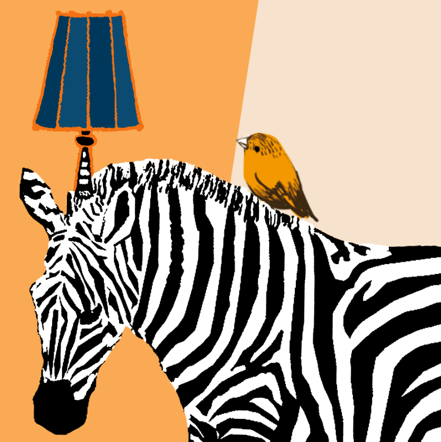
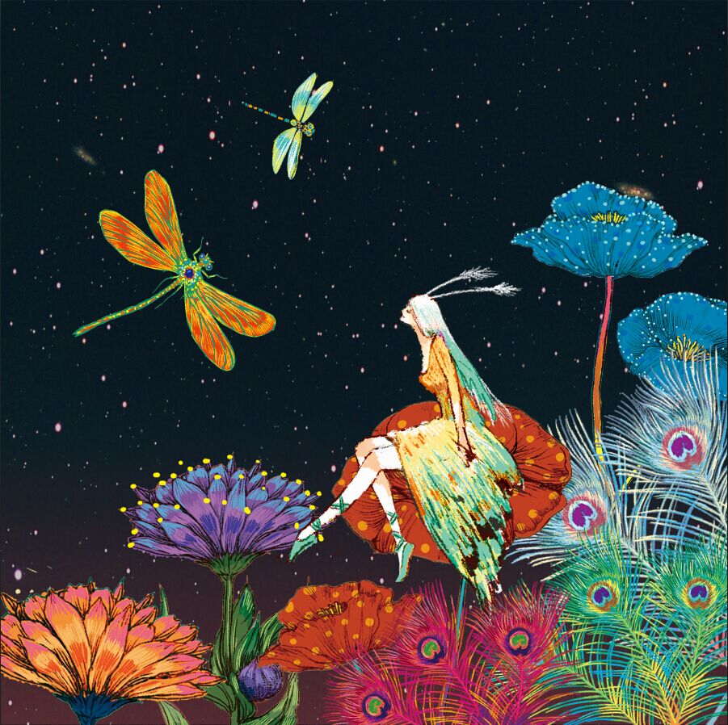

HELLO,I AM SHUO HAO
I have had a strong passion for painting since I was a child, so I have been learning
it since I was 7 years old. I studied at Tianjin Academy of Fine Arts with a Bachelor's degree in F ashion and
Pattern Design. After that I worked in the fashion industry for more than 7 years. Due to the rise of digital
media design, I took a program of Interactiv Media Management for one year and since then I am fascinated by
digital design. I enjoy the pleasure of creative processes of graphic design, UX design, website design,
animation creation, video creation and so on, which would be the center of my design career.in the future.
HOBBIES AND INTERESTS
Painting
Painting is a wonderful way for me to relax. it can develop my critical thinking skills, and enhance my
fine motor skills. It also build my confidence, promote a positive attitude and nurture emotional growth.

Shuo's shetch
Travelling
Travel gives me the opportunity to experience
other cultures. Once I go to other place or
other countries, I can experience and appreci-
ate the way that other people live.

Shuo's shetch